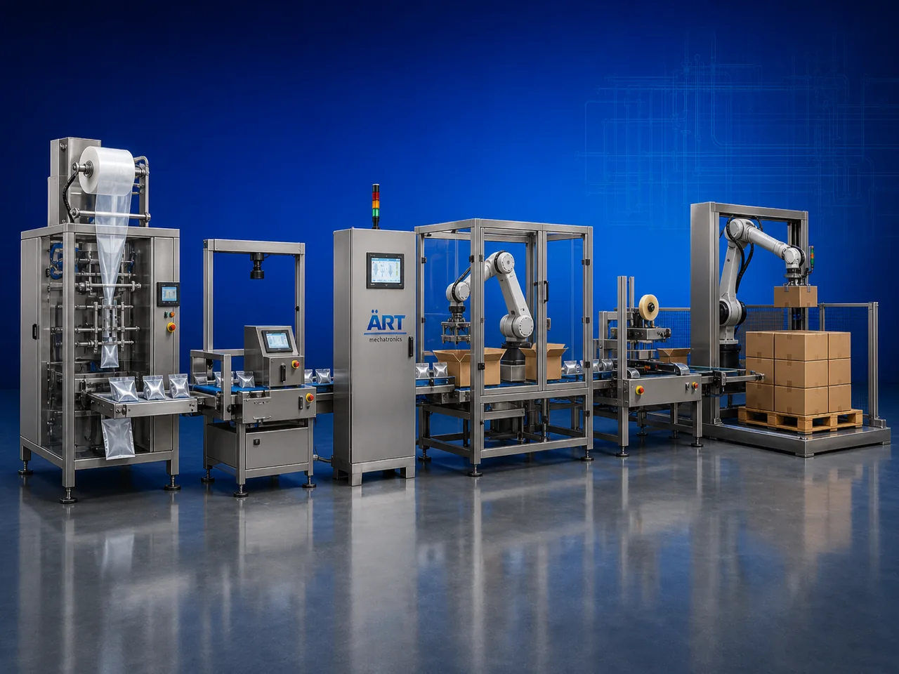

Unit Packaging Automation System (Automatic Primary Packaging Line)
A Unit Packaging Automation System, also known as a Primary Packaging Automation Line, Automatic Unit Packing System, Integrated Packaging Line, or Industrial Packaging Automation System, is an advanced industrial automation solution designed for automatic product feeding, weighing, dosing,…

About the Complete Packaging Automation
Unit packaging automation systems are widely used for: ✔ Automatic product packaging ✔ Filling and sealing operations ✔ Bottle and pouch packaging ✔ Labeling and coding systems ✔ Cartoning and wrapping operations ✔ Retail packaging automation ✔ High-speed packaging lines ✔ Industrial packaging integration
The system improves: ✔ Packaging speed ✔ Product handling accuracy ✔ Production efficiency ✔ Packaging consistency ✔ Labor reduction ✔ Product hygiene ✔ Retail packaging quality
Industrial unit packaging automation systems use: ✔ Servo synchronized packaging equipment ✔ PLC and HMI automation controls ✔ Robotic handling systems ✔ Intelligent conveyor integration ✔ Vision inspection and quality control systems
to automatically perform complete unit packaging operations with superior precision and high production efficiency.
Unit packaging automation systems are widely used in industries such as:
Food processing industries Beverage industries Chemical industries Cosmetic industries Pharmaceutical industries Agro industries Lubricant industries FMCG industries
where high-speed packaging automation, product consistency, and smart manufacturing operations are essential.
The system is highly suitable for: ✔ Bottle packaging automation ✔ Pouch and sachet packaging ✔ Jar and can packaging ✔ Retail product packaging ✔ High-speed production lines ✔ Complete packaging integration systems
ART Mechatronics offers high-performance unit packaging automation systems, engineered for continuous industrial operation, intelligent packaging integration, precision product handling, and reliable long-term industrial automation.
Working Principle of Unit Packaging Automation System
- 1. Product Feeding & Conveyor Handling Raw products or empty containers are automatically transferred through synchronized conveyor systems.
- 2. Product Weighing & Dosing Process Machine automatically weighs, doses, arranges, and positions products before packaging operation.
Servo synchronization ensures smooth product flow and accurate packaging operations.
- 3. Unit Packaging Operation System handles: ✔ Bottles ✔ Pouches ✔ Sachets ✔ Jars ✔ Cans ✔ Cups ✔ Trays ✔ Industrial packaged products
accurately and continuously.
- 4. Packaging Integration Process Machine performs: Filling Sealing Capping Labeling Coding Wrapping Inspection Cartoning
for efficient and retail-ready packaging operations.
- 5. Intelligent Automation & Inspection Integration Optional systems include: Vision inspection systems Robotic pick & place systems Barcode verification Leak testing systems Automatic rejection systems
- 6. Finished Product Discharge Finished packaged products discharged automatically for: Secondary packaging Warehouse storage Retail distribution Export shipment operations
Types of Unit Packaging Automation Systems
- 1. Bottle Packaging Automation System Designed for: ✔ Beverage and liquid packaging applications
- 2. Pouch & Sachet Packaging Line Suitable for: ✔ Food and FMCG packaging systems
- 3. Jar & Can Packaging System Uses: ✔ Retail and industrial packaging operations
- 4. Cup & Tray Packaging Automation System Designed for: ✔ Dairy and ready-to-eat food packaging systems
- 5. Servo Controlled Packaging Automation Line Suitable for: ✔ Precision high-speed packaging operations
- 6. Fully Automatic Integrated Packaging System Designed for: ✔ Complete industrial packaging automation lines
Industries Using Unit Packaging Automation Systems
🍅 Food Processing Industry Snacks, spices, sauces, edible oils, grains, and food packaging systems. 🥤 Beverage Industry Water bottles, juices, soft drinks, and beverage packaging systems. ⚗️ Chemical Industry Industrial liquids, detergents, and chemical packaging automation systems. 🧴 Cosmetic & Personal Care Industry Perfumes, lotions, creams, and cosmetic packaging systems. 💊 Pharmaceutical Industry Medicine packaging and healthcare product automation systems. 🛒 FMCG Industry Consumer products and retail packaging automation systems.
Features & Advantages
✔ High-speed automatic packaging operation ✔ Intelligent product handling and packaging systems ✔ Complete primary packaging automation integration ✔ PLC and servo automation control systems ✔ Improves production efficiency and packaging consistency ✔ Reduces labor dependency and packaging errors ✔ Supports multiple packaging formats and products ✔ Reliable long-term industrial performance ✔ Smooth and continuous packaging line integration
Technical Highlights
System Type: Unit packaging automation system Primary packaging automation line Industrial packaging automation system Product Compatibility: Bottles Pouches Sachets Jars Cans Cups Trays Industrial packaged products Packaging Integration: Filling systems Sealing systems Labeling systems Inspection systems Robotic handling systems Features: PLC control system Servo synchronization Touchscreen HMI Vision inspection systems Robotic automation integration Applications: Food products Beverages Chemicals Cosmetics Pharmaceutical products Industrial packaged products Automation: Semi-automatic Fully automatic industrial systems
Turnkey Unit Packaging Automation Solutions
ART Mechatronics offers: Complete packaging automation systems Automatic product packaging solutions Industrial automation integration systems Conveyor synchronization systems Installation & commissioning After-sales service & AMC
Why Choose Art Mechatronics
Expertise in industrial packaging and automation systems Customized packaging automation solutions for multiple industries High-performance and intelligent automation technology Advanced PLC, servo, and robotic systems Proven industrial packaging performance across sectors
Applications
Food Processing Plants Beverage Manufacturing Facilities Chemical Packaging Industries Cosmetic Packaging Units Pharmaceutical Packaging Plants FMCG Packaging Industries
Related Automation & Robotics machines
Get pricing & specs for the Complete Packaging Automation
Share the product, target capacity, current process and plant location. These details help our engineers discuss the right machine or line configuration.
One partner, from design to start-up
ART Mechatronics designs, manufactures, installs and commissions your Complete Packaging Automation solution with regional presence in India, UAE and Thailand.